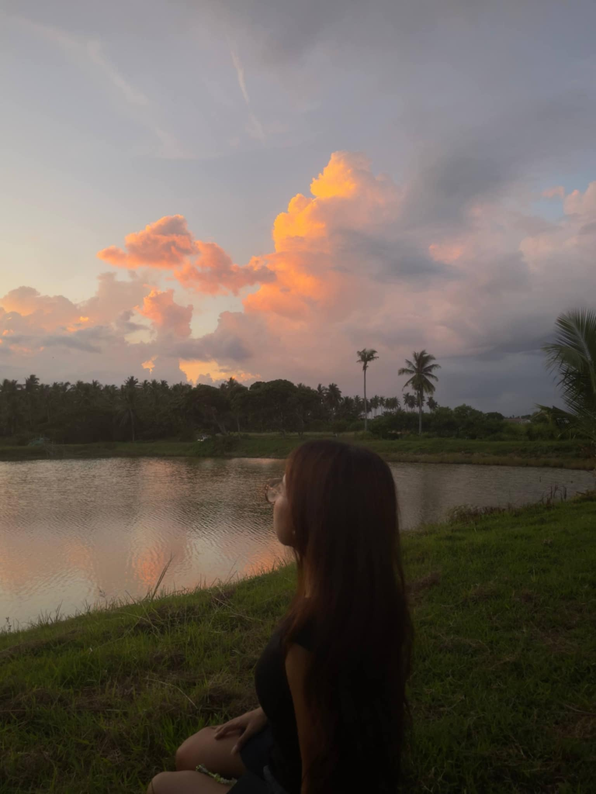

The day is done, the light goes away, and everything has to close. That's what they always say.
Whenever I see a sunset, I feel calm.
Everything gets quiet and the noise in my head slows down. It feels like my solace, a place where I can finally breathe.
And then I realized...

I'm really astonished how your beauty resonates with the beauty of sunset, love!☀
Perhaps the sunset taught me that not every ending means goodbye,
that even fading light can paint the heavens with a beauty that stays.
That there is courage in showing up, even when your brightest hues have faded,
and grace in giving what little warmth remains, without needing to outshine the day.
And perhaps that is why you feel like home in the quietest hours, Sol.
a gentle hush that settles where the world has grown too loud.
You remind me that even when you cannot give the light you once carried,
you can still be someone's sunset, their solace, their reason to breathe easier.
A sunset is not an ending. It is beauty and perseverance, showing up again and again. The more I watch it, the more I love it, just like you.
“Somewhere between the fading gold and the quiet sky, I found a beauty that reminded me of you, Sol. A beauty that doesn't need to last forever in the sky to leave the world in awe, because even as the light grows dim, it still knows how to make the whole horizon beautiful.”